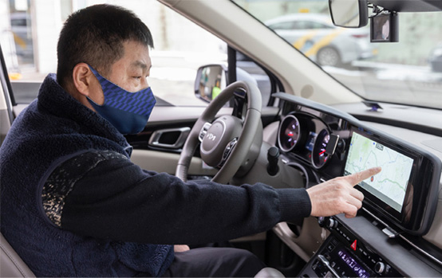

뺑소니 피의자를
끝까지 추격한 의협심
안전을 지키는 택시 운전사 김재현 씨
그를 만나 당시의 다급했던 상황에 대해 직접 들었다.
도로 위에서는 나의 일과 남의 일이 구분되지 않는다는 말이 공명처럼 울렸다.
광주광역시 서구 농성동의 한 교차로. 그곳은 여느 때처럼 한산했다. 자정을 넘긴 새벽 2시경이라는 시각도 시각이려니와 어둠이 짙게 깔린 도로 위의 풍경은 평소와 다르지 않았다. 교차로에서 신호 대기 중이던 김재현 운전사의 택시 앞에 서 있던 오토바이 두 대가 사건의 발단이 될 줄은 꿈에도 몰랐다.
“신호가 바뀌니 앞에 있던 오토바이 두 대가 출발했죠. 그런데 출발한 지 얼마 되지 않아서 오토바이 두 대가 비틀거리면서 쓰러진 거예요. 심지어 안전모도 착용하지 않은 상태였어요.”
김재현 운전사는 오토바이가 쓰러진 원인을 자세히 알 수 없지만 위험한 상황이라는 것을 직감했다. 아니다 다를까. 나란히 있던 오토바이 중 1차로 방향으로 넘어진 오토바이 한 대가 변을 당했다. 뒤따라 오던 차량이 그를 덮친 것이다.
김재현 운전사는 사고 현장을 목격하고 가슴이 철렁 내려앉았다. 사고 현장을 두 눈으로 똑똑히 목격했는데 사고를 낸 차량은 현장을 유유히 빠져나가는 것이었다. 사고를 낸 차량은 속도를 줄이지 않았고, 쫓아가지 않으면 문제가 더 심각해질 것 같다는 생각이 앞섰다. ‘뺑소니 사고’임을 직감하고 차량을 뒤쫓기 시작했다. 손님을 태우고 있었지만, 사고 현장을 외면할 수 없었다. 손님께 양해를 구한 뒤 1km 넘는 거리를 뒤쫓아 갔고, 마침내 차량을 세운 운전자와 마주할 수 있었다. 차에서 내린 운전자에게 “왜 사고를 내고 그냥 가십니까?”라고 묻자 본인이 사고를 낸 줄 몰랐다고 발뺌했다. 그러더니 블랙박스를 확인하고서야, 사고 사실을 시인했다. 김재현 운전사는 112에 신고했고, 경찰관이 도착한 뒤 현장을 빠져나왔다. 현장에서는 미처 몰랐던 사실 하나, 사고를 낸 운전자는 술에 취한 상태였다. 음주 운전에 대한 심각성이 새삼 무겁게 느껴지는 순간이었다.
사고는 사망으로 이어졌다. 오토바이에서 넘어지며, 곧바로 뒤따라 오던 차에 치였기에 손쓸 틈조차 없었다. 사고를 뒤에서 목격하면서 받은 충격도 상당했다. 게다가 사고를 낸 운전자가 사고 사실조차 모르고 있었다는 게 더욱 그러했다. ‘어떻게 모를 수가 있을까?’ ‘술에 취해 인지하지 못한 걸까?’ ‘아니면 무작정 모르쇠로 일관하는 것인가?’ 의문투성이였다.
사고는 찰나의 순간에 일어나며, 때론 돌이킬 수 없는 결과로 이어진다는 사실을 뼈저리게 깨달은 순간이었다. 비록 사고와 직접적으로 연관되지는 않았지만, 바로 옆에서 목격했다는 사실 하나만으로 충격은 쉽게 가시지 않았다. 최선을 다해 사고를 낸 운전자를 쫓아갔기에 현장에서 할 수 있는 최선을 다하긴 했지만, 김재현 씨의 마음은 편하지 않았다.
“운전자, 보행자 누구든 도로 위에서는 긴장을 놓지 않아야 합니다. 누구든 도로 위에서는 가해자가 될 수도, 피해자가 될 수도 있기 때문이지요.”라며 “특히 술을 한 잔이라도 마시면 절대 운전대를 잡지 말아야 합니다. 이번 사고를 바로 옆에서 지켜보며, 음주 운전의 무서움을 다시 한번 깨닫게 되었습니다.”라고 전했다.
김재현 운전사는 도로 위에서는 누구나 교통 법규를 준수해야 한다고 강조한다. 택시 운전을 하다 보면 “기사님! 차도 없는데 그냥 신호 무시하고 가주세요. 제가 좀 바쁘거든요.”라고 요청하는 손님들을 쉽게 만날 수 있다. 도로 위에 차가 별로 없는 시간대에는 그런 유혹에 쉽게 빠지기 마련이다. 한시가 바쁜 손님 입장에서 생각하면, 쉽게 그 유혹을 뿌리치기 힘든 것도 사실이다. 한 명이라도 더 태우기 위해서든 손님의 부탁을 거절하기 힘들어서든, 신호를 무시하고 달리는 운전사들도 있다. 하지만 방심은 사고로 이어질 수 있다는 사실을 항상 먼저 생각해야 한다. “이러한 요구를 과감하게 뿌리쳐야 한다는 사실을 운전사들 모두가 깨닫고 실천하길 바랍니다. 손님들께는 제발 이런 무리한 요구를 택시 운전사들에게 하지 말아 달라고 당부하고 싶고요. 운전사로서는 손님의 요구를 무턱대고 거절하기 어렵기 때문이지요.”

광주서부경찰서는 음주 뺑소니 사망사고를 내고 도주한 운전자를 추격함으로써, 운전자를 검거하는 데 공을 세운 김재현 운전사에게 표창장과 포상금을 수여했다. 사고 후 도주하는 차량을 추격하여 경찰관에게 인계하기까지, 자칫 신변의 위협을 느낄 수 있는 상황에서 선뜻 나서기 힘든 일이었다. 하지만 평소에도 불의를 보면 쉽게 지나치지 못하는 그의 성격상, 그냥 지나칠 수 없었기에 가능한 일이다.
김재현 운전사는 “사고를 옆에서 목격했는데, 도저히 가만히 있을 수가 없더라고요. 택시 안에는 손님이 타고 있었지만 도주 차량을 추격해야겠다는 생각이 앞섰던 것이지요. 앞으로도 이와 같은 일이 발생하면, 이번 사건과 똑같이 할 것”이라고 담담하게 말했다. 행동은 정신의 거울이다. 도로 위에서는 내 일이 남의 일과 다르지 않다는 그의 말이 묵직하게 울렸다.